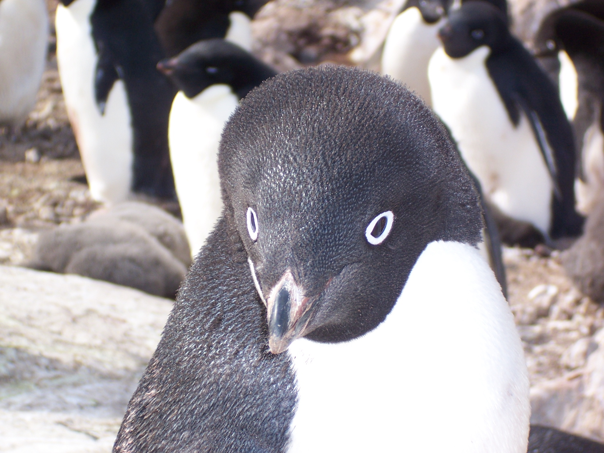

Tučňák(Kwalski)
Výskyt
Domovinou těchto ptáků jsou chladná, slaná moře na Jižní polokouli. Zde obývají zejména Antarktický poloostrov, kde se nachází asi 25 % z celkového počtu populace, a blízké subantarktické ostrovy; z nich nejvíce Falklandské ostrovy (až 40 % světové populace), Jižní Georgii a Jižní Sandwichovy ostrovy, Jižní Shetlandy, souostroví Kergueleny, Crozetovy ostrovy, Heardův ostrov a McDonaldovy ostrovy, a v neposlední řadě Jižní Orkneje. Menší, jen několika tisícové kolonie, pak nalezneme například na ostrově Macquarie po boku tučňáků královských, nebo na ostrově Marion a sousedících ostrovech prince Edvarda. Poměrně nedávno byl zpozorován i třeba na argentinském ostrově s celým názvem Martillo a Islas de los Estado, kde však hnízdí pouze pár stovek ptáků. Odborníci celkově evidují více než 300 000 hnízdících párů z prakticky neměnného trendu trvajícího již desítky let.
Fyzický popis

Tučňák oslí je nelétavý pták, dobře přizpůsobený k životu v moři, kde loví potravu. Namísto lehkých křídel má tuhé ploutve připomínající vesla, které mu umožňují obratně se v hluboké vodě pohybovat.
Chování
Tučňák oslí je společenský druh zvyklí hnízdit v početných koloniích o desítkách až tisících párech, navíc po boku dalších druhů tučňáků či jiných druhů ptáků. Dle dostupných pramenů je zpravidla monogamní. Uzavřené páry hnízdí spolu často celý život a k přetržení vazeb dochází jen zřídka, v případě, že se páru jednoduše nedaří (opomineme-li možné úmrtí jednoho z partnerů). Takové páry se pak nezabývají námluvami, čímž vzniká cenná úspora času.Celkovou procentuální bilanci mohou zkreslit mladí nezkušení jedinci.
Potrava a lov
Tučňák oslí je masožravec. Živí se především menšími rybami, krilem (například krunýřovkou krillovou) a případně hlavonožci, na základě ročního období a zeměpisné polohy kolonií; například v měsících únor-březen tvoří korýši pouze 10 % z celé stravy, zatímco počátkem června se tímto členovcem živí již ze 75 %. Od konce června se pak živí výhradně (z 90 %) rybí stravou, především z čeledi ledovkovitých (Nototheniidae) – například druhem Lepidonotothen squamifrons, a to až do konce října. Variabilita z hlediska lokalit je však poměrně výrazná; na ostrově Marion se již v měsíci březen živí korýši z více než 80 %, a kolonie na Antarktickém poloostrově se praktický celé období chovu živí zejména krilem. Obecně platí, že se v severnějších vodách živí tučňáci převážně rybí stravou, zatímco v jižní částí jejich výskytu je jejich potrava složena především z korýšů. Sezónní změnu potravy způsobuje hned několik faktorů, jako například přítomnost jiných druhů tučňáků, mimo hnízdní migrace ptáků a v neposlední řadě taktéž hloubka, v které se kořist nachází.
Rozmnožování

Rozmnožování tohoto druhu je sezónní; v závislosti na lokalitě nastává počátkem května až září, a vrcholí koncem října až listopadu. Jednotlivé kolonie mají totiž odlišné podmínky, přičemž dříve začíná hnízdit severněji hnízdící subspecie (Pygoscelis papua papua) a o něco později jižněji hnízdící subspecie (Pygoscelis papua ellsworthi). Tučňák oslí se začíná pářit ve věku dvou let, ale v reprodukci úspěšný bývá obvykle o jeden až dva roky později.
Způsoby komunikace
- Zpíváním
- Pískáním